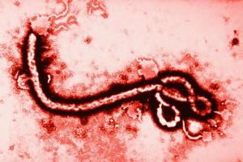
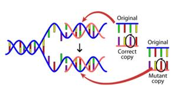

Viruses… The biological kind, not the computer kind.

A few weeks ago I finished reading The Hot Zone by Richard Preston and have been terrified ever since. It really made me realize the hype the media was making over the recent Ebola virus outbreak was actually somewhat justified. The Filovirus family, for which the Ebola virus belongs, is no joking matter and should be taken very seriously.
With that said, I’ve also recently begun reading Spillover by David Quammen, done some other research, and have since learned that the scenarios in The Hot Zone were a little, shall we say, sensationalized. But make no mistake, viruses and other diseases are here to stay, and some are truly frightening.
What is especially horrifying about viruses is the fact that they replicate so often. Each replication introduces a chance that the genetic code that makes up the virus could mutate. Most mutations are benign or even harmful to the virus itself, but some can make the virus just a little stronger, spread easier, become resistant to vaccines, or become more deadly to the infected.
I’ve always been a big fan of modern zombie movies... you know, the kind that are virus or even fungal based. They just seemed somewhat believable to me which made them that much more scary. With my newly acquired, but very limited knowledge of certain viruses and they way they work, it at least seems plausible that with the right mutation of say, the rabies virus, a real life ‘zombie’ outbreak could occur like the one in 28 Days Later, World War Z, or The Walking Dead!
This got me thinking. I imagined a certain virus infecting a person. A host. It invades their body taking over cells and hijacking them for their own reproductive purposes. A single virus invades a cell, utilizing the cell’s resources to replicate until the cell explodes, spilling countless more viruses into the hosts body, each looking for their own cell to take over and continue the process. But each replication comes with a chance of mutation.
These mutations, they’re the key. Mutations are where frightening new diseases emerge. What if this mutated version of the virus happens to be in the drop of blood that infects the next host? That version becomes the dominate version within the new host and fervently replicates. But then, this new version eventually mutates... over and over, again and again until someone – a very unlucky someone – becomes Patient Zero to the real life zombie outbreak. I swear, it could happen.

Anyway, this mutation and evolution process intrigued me. I wanted to see it. I wanted to play with it. I wanted to simulate it. I decided the best way to do this was to write a computer program to illustrate this process. I would create a virus, its genetics represented by a simple string of letters. Each gene (each letter) would be subject to a random mutation caused by what any genetic mutation is caused by: radiation damage, a foul-up in the error checking mechanism, or some other form of bad luck. In my program, a random number generator chose the odds of mutation for which each gene was subject to.
This virus would replicate and spread throughout a host, then infect the next host. With each replication, a chance of mutation occurs. This mutation gets replicated and passed on. It’s almost like a game of telephone. The original gets passed on, changes, and passed on until the outcome is only vaguely reminiscent of the original.
This, in retrospect, turns out to be an illustration on why we need to get a flu shot every year. The flu, like any other organism, mutates... it evolves. A certain strain of the flu emerges dominate and scientists create a vaccine for the lucky ones who haven’t been infected yet. But by the next year, a different strain (mutation) has emerged and we all need to get another flu shot.
Evolution: It’s real.
What follows are the notes I jotted down when I first thought up the simulation, a sample output of the simulation itself, and the source code for the project.
**Please Note: to all the real programmers out there, a programmer I am not. The only programming I do is for fun as a hobby. I realize my code is sloppy, inefficient, and downright ugly. But hey, for my purposes, it works! And absolutely no AI was used to write any portion; AI wasn't even a thing! Get off my lawn!;P It’s written in C++. Also, this is an EXTREMELY simplified abstraction of germ theory and how evolution and mutation occurs. It’s for simple demonstration purposes only.**
NOTES
VIRUS MUTATION SIMULATION ::
A simple program to demonstrate genetic mutation, selection, and speciation of viruses in a population of hosts.
The virus’ genetic code (genome) is represented by a string of 10 letters (genes), beginning at “M”. The original virus species genetic code (genome) is: MMMMMMMMMM
The “host” is infected with the virus. The virus replicates many times within the host. In reality, billions of replications occur but for this simulation, the virus will be replicated 20 times within the host. With each replication, there’s a chance random mutation may occur. This is represented with each character deviating alphabetically, either positively or negatively. i.e. M+2=O, E-3=B, P-2=N, L+2=N.
The virus is then spread to the next host through a drop of blood or a droplet of saliva. This is represented in this simulation by one of the replicated virus strains being chosen at random to be the species that infects the next host.
(If any one character within a virus (gene) deviates more than 2 digits, or if the total deviation of all the digits adds up to more than 6, that virus will be considered a new species.) ** NOT YET IMPLEMENTED AS OF V1_0
This processes will then repeat 10 times, representing 10 different outbreaks. All 10 “generations” (iterations) will be saved and classified as its own variation of the original virus genome.
By comparing each generation’s genetic code to one another, it will be possible to “trace” the genetic lineage back to the original virus and see directly the evolution and speciation of a virus.
MUTATION ALGORITHM (subject to change!!!)
1) Picks positive or negative number.
2) If Random Number Generator (RNG) chooses the same number as odds, then true.
To Deviate:
“Compare” number can be anything: ex. 1
RNG picks number, 1-1500. If matches, add/subtract deviating amount (i.e. 9) to existing number then move on to next digit. If it doesn’t match, it tries again but with better odds (i.e. moves down deviation ladder). If none match (get to zero), the algorithm stops at zero (no deviation) and moves on to next digit (gene).
:::: VIRUS SIMULATION ::::
Patient 0: M M M M M M M M M M
Variations within host:
1) M M M M M M M M M M
2) M M M L M M M M M M
3) M M M D M M M M M M
4) M M M M M M M M M M
5) M M M M M M M M M M
6) M M M M M M M M M M
7) M M M M M M K M M M
8) M M M M M M M M M M
9) M M M M M M M M M M
10) M M U M M M M M M M
11) M M M M M M M M M M
12) M M M M M M M M M M
13) M M M M M M M M M M
14) M M M M M M M M M M
15) M M M M M M M M M M
16) N M M M M M M M M M
17) M M M M M M N M M M
18) M M M M M M M M M M
19) M M M M M M M M M M
20) M M M M M M M M M M
Randomly selected iteration: 16
*Drop of blood infecting next host -> N M M M M M M M M M
---------------------------------------------------------
Host 1 infected with: N M M M M M M M M M
Variations within host:
1) N M M M M M M M M M
2) N M M M M M M M M M
3) N M M M M M M M M M
4) N M M M M M M M M M
5) N M M M M M M M M M
6) N M M M N M M M M M
7) N M M M M K M M M M
8) N M M M M M N M M M
9) N M M M M M M M M M
10) N M O M M M M M M M
11) N M M M M M M M M M
12) N M M M M M M M M M
13) N M M M M M M M M M
14) N M M M M M M M M M
15) N M M M M M M M M M
16) N F M M M M M M M M
17) N M M T M M M M M M
18) N M M M M M M M M M
19) N M M M L M M M M M
20) N M M M M O M M M M
Randomly selected iteration: 2
*Drop of blood infecting next host -> N M M M M M M M M M
---------------------------------------------------------
Host 2 infected with: N M M M M M M M M M
Variations within host:
1) N M M M M M M M M M
2) N M M M M M M M M M
3) N M M M M M M M M M
4) N M M M M M M M M M
5) N M M M M M M M M M
6) N M M M M M O M M M
7) N M M M M M M M M M
8) N M M M M M M M M M
9) N M M M M M M M M M
10) N M M M M M M M M M
11) N M M M K M M M M M
12) N M M M M M M M M M
13) N M M N M M M M M M
14) N M M M Q M M M M M
15) N M M M M M M M M M
16) N M M M L M M M M M
17) N M M M M M M M M M
18) N M M M M M M M M M
19) N M M M M M M M M M
20) N M M M M M M M M M
Randomly selected iteration: 9
*Drop of blood infecting next host -> N M M M M M M M M M
---------------------------------------------------------
Host 3 infected with: N M M M M M M M M M
Variations within host:
1) N M M M M M M M M M
2) N J M M M M M M M M
3) N M M M M M M M M M
4) O M M M M M K M M M
5) N M M M M M M M M M
6) M M M M M M M M M M
7) N M M M M M M M M M
8) N M M M M M M M M M
9) N M M M M M M M M M
10) N M M M M M M M M M
11) N M M M M L M M M M
12) N M M M M M M M M M
13) N M M M M M M M M M
14) N M M M M M M M M M
15) N M M N M M M M M M
16) N M N M M M M M M M
17) N M M M M M M M Q M
18) N O M M M M M M M M
19) N M M K M M M M M M
20) N M M M M M M M M M
Randomly selected iteration: 11
*Drop of blood infecting next host -> N M M M M L M M M M
---------------------------------------------------------
Host 4 infected with: N M M M M L M M M M
Variations within host:
1) N M M M M L M M M M
2) N M M M M L M M M M
3) N O M M M L M M M M
4) N M M M M L M M K M
5) N M M M M L M M M M
6) N M M M M L M M M M
7) N M J M M L M M M M
8) N M M M M L M M M M
9) N M M M M L M M M M
10) N M M M M L M M M M
11) N L R M M L M M M M
12) N M M M M L M N M M
13) N M M M M L M M M M
14) N M M M M L M M M M
15) N M M M M L M M M M
16) N M M M M L M M M M
17) N M M M M L M M M M
18) N M O M M L M M M M
19) N M M M M L M M M M
20) N M M M M L M M M M
Randomly selected iteration: 11
*Drop of blood infecting next host -> N L R M M L M M M M
---------------------------------------------------------
Host 5 infected with: N L R M M L M M M M
Variations within host:
1) N L R M M N M M M M
2) N L R N M L K M M M
3) N L R M M L M M M M
4) N L R M M S M M M M
5) N L T M M L M M M M
6) N L Q M M L L M M M
7) N L R M M L M M N M
8) N L R M M L M M M M
9) N L R M M L M M M M
10) K L R M M L M M M M
11) J L R M M L M M M M
12) N L R M M L M M M M
13) N L R M M L M M M M
14) N L R M M L M M M M
15) M L R M M L M M M M
16) N L R M I L M M M M
17) N L R M N L M M M M
18) N L R M M L M M M M
19) N L R M M L M M M M
20) N L R M M L M M M M
Randomly selected iteration: 14
*Drop of blood infecting next host -> N L R M M L M M M M
---------------------------------------------------------
Host 6 infected with: N L R M M L M M M M
Variations within host:
1) N L R M M L M M M M
2) N L R M M L M M M M
3) N L R M M L M M M I
4) N L R N M L M M M M
5) N L R M M L M M M M
6) N L R M M L M M M M
7) N L R M M L M M M M
8) N L R M M L M M M M
9) N L R M M L M M M M
10) P L R M M L M M M M
11) N L R M M L M M M M
12) N L R M M L M M M M
13) N L R M M M M M M M
14) N L R M M L M M M M
15) N L R M M L M M M M
16) N L R M M L M M M M
17) N L R M R L M M P M
18) N L R M M L M M D M
19) N L R M M L M M M T
20) N L R M M L M M M M
Randomly selected iteration: 10
*Drop of blood infecting next host -> P L R M M L M M M M
---------------------------------------------------------
Host 7 infected with: P L R M M L M M M M
Variations within host:
1) R L R M M L M M M M
2) P L R M M L M M M M
3) P L R M M L M M M M
4) P L R M M L M M M M
5) P L R M M L M M M M
6) P L R M M L M M M M
7) P L R M M L M M M M
8) P L R M M L M M M M
9) P L R M M L M M M M
10) P L R M M M M M M M
11) P L R M M L M M M M
12) P L R M M L M M M M
13) P L R M M L M M M M
14) P M R M M L M M M M
15) P L R M M L M M M M
16) P J R M M L M M M M
17) P L R M M L M M M M
18) P L R M M L M M M M
19) P L R M M L M M M M
20) P L R M M L M M M M
Randomly selected iteration: 17
*Drop of blood infecting next host -> P L R M M L M M M M
---------------------------------------------------------
Host 8 infected with: P L R M M L M M M M
Variations within host:
1) P L R M M L M M M M
2) P L R M M L M M M M
3) P L R M M L M M M M
4) P L R M M L M M M M
5) P L S M M L K M M M
6) P L R M M L M M M M
7) S L R M M L M M M M
8) P L R M M L M M M M
9) P L R M M L M M M M
10) N L R M M L M M M M
11) P L T M M L M M M M
12) P L R M M L M M Q M
13) P L Q M M L M M M M
14) P L R M M L M M M M
15) P L R M M L M M M M
16) P L R M M L M M M M
17) P L R M M L M M M M
18) P L R M M T M M M M
19) P L R M M L M M M M
20) P L R L M L M M M M
Randomly selected iteration: 16
*Drop of blood infecting next host -> P L R M M L M M M M
---------------------------------------------------------
Host 9 infected with: P L R M M L M M M M
Variations within host:
1) P K R M M L M M M N
2) P L R M M L M M M M
3) P L R I M L M M M M
4) P L R L M L L M M M
5) P L R M M L M M M M
6) P L R M M L M M M M
7) P L R M M L M M M M
8) P L R M M L M M M M
9) P L R M M I M M M M
10) P L R M M L M M M M
11) P L R M M L M M O M
12) P L W M M L M M M M
13) P J R M M L M M M M
14) P L R M M I M M M M
15) P L R M M L M M M M
16) P L R M M L M M M M
17) P L R M M L M M M M
18) P L R M M L M M M M
19) P L R M M M M M M M
20) P L R M M L M M M M
Randomly selected iteration: 7
*Drop of blood infecting next host -> P L R M M L M M M M
---------------------------------------------------------
Host 10 infected with: P L R M M L M M M M
...When will it end?!
Press any key to continue . . .
SOURCE CODE
replace language-cpp with language-python, language-html, language-css, etc.
// CHANGELOG:
// V0_1 2015/01/15
// Create simple virus array. Print array element. Add to element. Print element.
//
// V0_2 2015/01/18
// Print entire array using a function. Generate random number. Apply random number.
//
// V0_3 2015/01/18
// Converted virus from numbers to letters. Added deviation function stuff.
// Program now fully runs mutation simulation x replications (with worse odds).
//
// V0_4 2015/01/18
// Array of arrays. Now 20 different variations within a host. Picked 1 variation
// of 20 from host to pass on to next host.
//
// V0_5 2015/01/18
// Nesting/running entire routine again to simulate multiple hosts.
//
// V1_0 2015/01/19
// Fixed nesting/running to simulate multiple hosts so now it actually works.
// Added formatting for easier user readability.
//----------------------------------------------------------------------------//
#include // cout, etc.
#include // Library for rand and srand
#include // Time library
using namespace std;
void print(char p_array[10]); // Function prototype for print
int deviate(); // Function prototype for deviation function
int main(){ // Mighty main
srand(time(NULL)); // Makes "truly" random number (not really)
int ch=0, n=0, i=0, a=0, b=0; // Initialize variables
char virus[20][10]; // Initializes 20 arrays
for(i=0; i<20; i++){ // 20 arrays
for(n=0; n<10; n++){ // 10 elements in each array
virus[i][n] = 'M'; // Declares each element = M
}
}
i = n = 0; // Resets variables
cout << endl << " :::: VIRUS SIMULATION :::: " << endl;
cout << endl << "Patient 0: "; // Formatting
print(virus[i]); // Prints entire virus array
cout << endl;
for(a=0; a<10; a++){ // Runs sequence for 10 hosts
cout << endl << "Variations within host: " << endl;
for(i=0; i<20; i++){ // Runs deviation sequence on 20 arrays
for(n=0; n<10; n++){ // Runs deviation on each array element
ch = virus[i][n] + deviate(); // Adds deviation to current value
virus[i][n] = ch; // From int back to char
}
cout << (i+1) << ") "; // Formatting
print(virus[i]); // Prints entire virus array, 20 times
cout << endl;
}
i = n = b = 0; // Reset variables
b = (rand() % 19); // Random number, 0-19
cout << endl << "Randomly selected iteration: " // Just to make sure number is right
<< (b+1) << endl << "*Drop of blood infecting next host -> ";
print(virus[b]); // Prints selected iteration
cout << endl; // Formatting
cout << "---------------------------------------------------------"
<< endl; // Formatting
for(i=0; i<20; i++){ // 20 arrays
for(n=0; n<10; n++) // 10 elements in each array
virus[i][n] = virus[b][n]; // Takes selected iteration and overwrites to all arrays
}
i = 0; // Reset variable
cout << endl << "Host " << (a+1) << " infected with: "; // Formatting
print(virus[i]); // Prints new virus iteration within next host
}
cout << endl << endl // Formatting
<< "...When will it end?!" << endl << endl;
system("pause"); // "Press any key to continue..."
return 0; // End of main!
}
void print(char p_array[10]){ // Function to print an entire array
int n;
for( n=0; n<10; n++)
cout << p_array[n] << " ";
}
int deviate(){ // Function to determine amount of deviation
int num = 0;
if((rand() % 1500 + 1) == 1){ // If random hits, adds or subtracts deviation
if((rand() % 2 + 1) == 1) // Determines addition or subtraction
num = num + 9;
else num = num - 9;
}
if((rand() % 1250 + 1) == 1){ // If random hits, adds or subtracts deviation
if((rand() % 2 + 1) == 1) // Determines addition or subtraction
num = num + 8;
else num = num - 8;
}
if((rand() % 1000 + 1) == 1){ // If random hits, adds or subtracts deviation
if((rand() % 2 + 1) == 1) // Determines addition or subtraction
num = num + 7;
else num = num - 7;
}
if((rand() % 800 + 1) == 1){ // If random hits, adds or subtracts deviation
if((rand() % 2 + 1) == 1) // Determines addition or subtraction
num = num + 6;
else num = num - 6;
}
if((rand() % 600 + 1) == 1){ // If random hits, adds or subtracts deviation
if((rand() % 2 + 1) == 1) // Determines addition or subtraction
num = num + 5;
else num = num - 5;
}
if((rand() % 400 + 1) == 1){ // If random hits, adds or subtracts deviation
if((rand() % 2 + 1) == 1) // Determines addition or subtraction
num = num + 4;
else num = num - 4;
}
if((rand() % 200 + 1) == 1){ // If random hits, adds or subtracts deviation
if((rand() % 2 + 1) == 1) // Determines addition or subtraction
num = num + 3;
else num = num - 3;
}
if((rand() % 100 + 1) == 1){ // If random hits, adds or subtracts deviation
if((rand() % 2 + 1) == 1) // Determines addition or subtraction
num = num + 2;
else num = num - 2;
}
if((rand() % 50 + 1) == 1){ // If random hits, adds or subtracts deviation
if((rand() % 2 + 1) == 1) // Determines addition or subtraction
num = num + 1;
else num = num - 1;
}
else num = num;
return num;
}